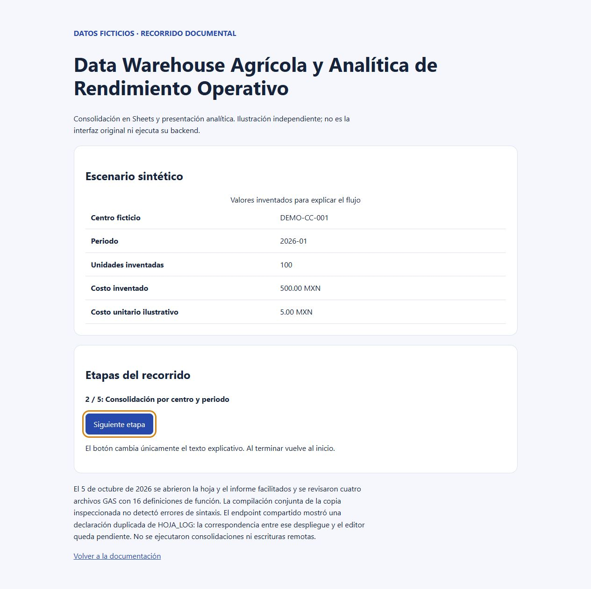

PROYECTO DESTACADO · ANÁLISIS DE DATOS Y AUTOMATIZACIÓN
Data Warehouse Agrícola y Analítica de Rendimiento Operativo
Cuatro módulos inspeccionados y modelo SQL sintético reproducible. Endpoint GAS con error de declaración pendiente.
Problema operativo
Organizar registros de trabajo, fletes y catálogos distribuidos para consulta analítica y costos unitarios sin duplicar importes.
Solución técnica
Módulos GAS de consolidación y validación sobre Sheets. Modelo SQL sintético pedagógico en SQLite con agregación previa al cruce.
Tecnologías observadas
- Google Apps Script
- Google Sheets
- Looker Studio
- SQL / SQLite
Evidencia verificable
Revisión de 4 archivos GAS con 16 definiciones de función. Ejemplo SQLite: agregación previa, producción cero, faltantes y unicidad.

Alcance, límites y próximos pasos
Consultas BigQuery reportadas pendientes de inspección técnica. El endpoint declara duplicado HOJA_LOG; editor pasa sintaxis.
No se atribuyen métricas cuantitativas no medidas ni autoría exclusiva de componentes no acreditados. El repositorio documenta la aportación verificada y sus límites.
Ver repositorio y documentación técnica (abre en otra pestaña) ↗
Leer caso de estudio completo en GitHub (abre en otra pestaña) ↗